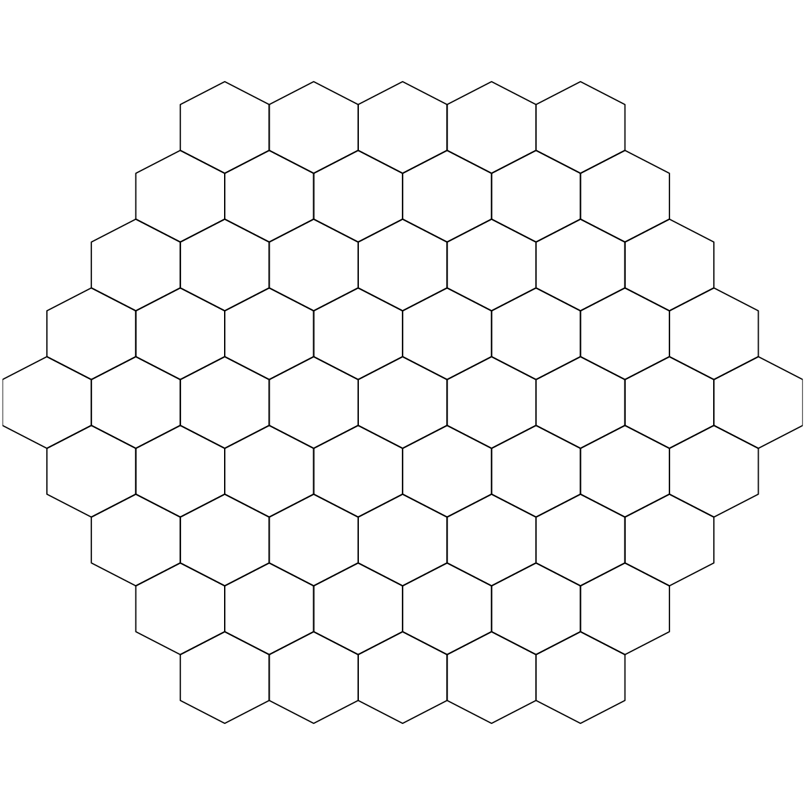

sTopology is supposed to define the topology of a
2D map grid. The topological shape can be either a
supra-hexagonal grid or a hexagonal/rectangle sheet. It
returns an object of "sTopol" class, containing: the
total number of hexagons/rectangles in the grid, the grid
xy-dimensions, the grid lattice, the grid shape, and the
2D coordinates of all hexagons/rectangles in the grid.
The 2D coordinates can be directly used to measure
distances between any pair of lattice
hexagons/rectangles.
sTopology(data = NULL, xdim = NULL, ydim = NULL, nHex = NULL, lattice = c("hexa",
"rect"), shape = c("suprahex", "sheet"))
an object of class "sTopol", a list with following components:
nHex: the total number
of hexagons/rectanges in the grid. It is not always the
same as the input nHex (if any); see "Note" below for the
explaination xdim: x-dimension of the grid
ydim: y-dimension of the grid
lattice: the grid lattice
shape: the grid shape coord: a
matrix of nHex x 2, with each row corresponding to the
coordinates of a hexagon/rectangle in the 2D map grid
call: the call that produced this result The output of nHex depends on the input arguments and grid shape:
nHex=xdim*ydim for the
"sheet" shape, r=(min(xdim,ydim)+1)/2 for the
"suprahex" shape nHex=5*sqrt(dlen), where dlen is the number of rows
of the input data sHexGrid for calculating the grid radius r.
The xdim (and ydim) is related to r via xdim=2*r-1
# For "suprahex" shape sTopol <- sTopology(xdim=3, ydim=3, lattice="hexa", shape="suprahex") # Error: "The suprahex shape grid only allows for hexagonal lattice" # sTopol <- sTopology(xdim=3, ydim=3, lattice="rect", shape="suprahex") # For "sheet" shape with hexagonal lattice sTopol <- sTopology(xdim=3, ydim=3, lattice="hexa", shape="sheet") # For "sheet" shape with rectangle lattice sTopol <- sTopology(xdim=3, ydim=3, lattice="rect", shape="sheet") # By default, nHex=19 (i.e., r=3; xdim=ydim=5) for "suprahex" shape sTopol <- sTopology(shape="suprahex")Warning message: Ignore the input parameters but use the default radius.# By default, xdim=ydim=5 (i.e., nHex=25) for "sheet" shape sTopol <- sTopology(shape="sheet") # Determine the topolopy of a supra-hexagonal grid based on input data # 1) generate an iid normal random matrix of 100x10 data <- matrix(rnorm(100*10,mean=0,sd=1), nrow=100, ncol=10) # 2) from this input matrix, determine nHex=5*sqrt(nrow(data))=50, # but it returns nHex=61, via "sHexGrid(nHex=50)", to make sure a supra-hexagonal grid sTopol <- sTopology(data=data, lattice="hexa", shape="suprahex") # visualise a supre-hexagonal grid visHexMapping(sTopol,mappingType="indexes")
sHexGrid, visHexMapping
Fang H, Gough J. (2014) supraHex: an R/Bioconductor package for tabular omics data analysis using a supra-hexagonal map. Biochemical and Biophysical Research Communications, 443(1), 285-289. http://dx.doi.org/10.1016/j.bbrc.2013.11.103, PMID: 24309102
){kind=link}